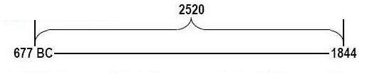

1798 AND 1844 CONFIRMED
BY THE BIBLE'S LONGEST TIME PROPHECIES
Hab 2:1 I will stand upon my watch, and set me upon the tower, and will watch to see what he will say unto me, and what I shall answer when I am reproved.
Hab 2:2 And the LORD answered me, and said, Write the vision, and make it plain upon tables, that he may run that readeth it.
Hab 2:3 For the vision is yet for an appointed time, but at the end it shall speak, and not lie: though it tarry, wait for it; because it will surely come, it will not tarry.
DANIEL ACKNOWLEDGES THE CURSE IS IN EFFECT.
Dan 9:11 Yea, all Israel have transgressed thy law, even by departing, that they might not obey thy voice; therefore the curse is poured upon us, and the oath that is written in the law of Moses the servant of God, because we have sinned against him.
THE SEVEN TIMES CURSE.
Lev 26:18 And if ye will not yet for all this hearken unto me, then I will punish you seven times more for your sins.
Lev 26:19 And I will break the pride of your power; and I will make your heaven as iron, and your earth as brass:
Lev 26:20 And your strength shall be spent in vain: for your land shall not yield her increase, neither shall the trees of the land yield their fruits.
Lev 26:21 And if ye walk contrary unto me, and will not hearken unto me; I will bring seven times more plagues upon you according to your sins.
Lev 26:22 I will also send wild beasts among you, which shall rob you of your children, and destroy your cattle, and make you few in number; and your high ways shall be desolate.
Lev 26:23 And if ye will not be reformed by me by these things, but will walk contrary unto me;
Lev 26:24 Then will I also walk contrary unto you, and will punish you yet seven times for your sins.
Lev 26:25 And I will bring a sword upon you, that shall avenge the quarrel of my covenant: and when ye are gathered together within your cities, I will send the pestilence among you; and ye shall be delivered into the hand of the enemy.
Lev 26:26 And when I have broken the staff of your bread, ten women shall bake your bread in one oven, and they shall deliver you your bread again by weight: and ye shall eat, and not be satisfied.
Lev 26:27 And if ye will not for all this hearken unto me, but walk contrary unto me;
Lev 26:28 Then I will walk contrary unto you also in fury; and I, even I, will chastise you seven times for your sins.
Lev 26:29 And ye shall eat the flesh of your sons, and the flesh of your daughters shall ye eat.
Lev 26:30 And I will destroy your high places, and cut down your images, and cast your carcases upon the carcases of your idols, and my soul shall abhor you.
Lev 26:31 And I will make your cities waste, and bring your sanctuaries unto desolation, and I will not smell the savour of your sweet odours.
Lev 26:32 And I will bring the land into desolation: and your enemies which dwell therein shall be astonished at it.
GOD'S INDIGNATION - CURSE OF CAPTIVITY AND SCATTERING, THEN A GATHERING OF HIS PEOPLE.
Deu 29:27 And the anger of the LORD was kindled against this land, to bring upon it all the curses that are written in this book:
Deu 29:28 And the LORD rooted them out of their land in anger, and in wrath, and in great indignation, and cast them into another land, as it is this day.
Deu 29:29 The secret things belong unto the LORD our God: but those things which are revealed belong unto us and to our children for ever, that we may do all the words of this law.
Deu 30:1 And it shall come to pass, when all these things are come upon thee, the blessing and the curse, which I have set before thee, and thou shalt call them to mind among all the nations, whither the LORD thy God hath driven thee,
Deu 30:2 And shalt return unto the LORD thy God, and shalt obey his voice according to all that I command thee this day, thou and thy children, with all thine heart, and with all thy soul;
Deu 30:3 That then the LORD thy God will turn thy captivity, and have compassion upon thee, and will return and gather thee from all the nations, whither the LORD thy God hath scattered thee.
CAPTIVITY OF NORTHERN KINGDOM PROPHESIED (742 B.C.)
Isa 7:8 For the head of Syria is Damascus, and the head of Damascus is Rezin; and within threescore and five years shall Ephraim be broken, that it be not a people.
COMMENCEMENT OF THE SEVEN TIMES ON NORTHERN AND SOUTHERN KINGDOMS.
2 Ki 17:6 In the ninth year of Hoshea the king of Assyria took Samaria, and carried Israel away into Assyria, and placed them in Halah and in Habor by the river of Gozan, and in the cities of the Medes.
...
2 Ki 17:23 Until the LORD removed Israel out of his sight, as he had said by all his servants the prophets. So was Israel carried away out of their own land to Assyria unto this day.
Applying the day for a year principle 7 times represents 2520 years (7 X
360 days)
(Northern Kingdom, Samaria - Israel taken captive, 723 B.C.)
With the captivity of the northern kingdom of Israel, the subsequent captivity of Judah is prophesied. This happened at the end of the 65 years mentioned in Isa. 7:8.
Isa 10:5 O Assyrian, the rod of mine anger, and the staff in their hand is mine indignation.
Isa 10:6 I will send him against an hypocritical nation, and against the people of my wrath will I give him a charge, to take the spoil, and to take the prey, and to tread them down like the mire of the streets
...
Isa 10:10 As my hand hath found the kingdoms of the idols, and whose graven images did excel them of Jerusalem and of Samaria:
Isa 10:11 Shall I not, as I have done unto Samaria and her idols, so do to Jerusalem and her idols?
(Southern kingdom, king Mannasseh of Judah taken captive, 677 B.C.)
2 Chr 33:11 Wherefore the LORD brought upon them the captains of the host of the king of Assyria, which took Manasseh among the thorns, and bound him with fetters, and carried him to Babylon.

DANIEL TOLD ABOUT THE END OF THE SEVEN TIMES OF INDIGNATION PROPHECY.
Dan 8:19 And he said, Behold, I will make thee know what shall be in the last end of the indignation: for at the time appointed the end shall be.
Dan 11:33 And they that understand among the people shall instruct many: yet they shall fall by the sword, and by flame, by captivity, and by spoil, many days.
Dan 11:34 Now when they shall fall, they shall be holpen with a little help: but many shall cleave to them with flatteries.
Dan 11:35 And some of them of understanding shall fall, to try them, and to purge, and to make them white, even to the time of the end: because it is yet for a time appointed.
Dan 11:36 And the king shall do according to his will; and he shall exalt himself, and magnify himself above every god, and shall speak marvellous things against the God of gods, and shall prosper till the indignation be accomplished: for that that is determined shall be done.Dan 12:9 And he said, Go thy way, Daniel: for the words are closed up and sealed till the time of the end.
Dan 12:10 Many shall be purified, and made white, and tried; but the wicked shall do wickedly: and none of the wicked shall understand; but the wise shall understand.
TIMES OF THE GENTILES (CAPTIVITY) ENDS CONCURRENTLY WITH THE 7 TIMES CURSE ON ISRAEL IN 1798 A.D.
Luke 21:24 And they shall fall by the edge of the sword, and shall be led away captive into all nations: and Jerusalem shall be trodden down of the Gentiles, until the times of the Gentiles be fulfilled.
Rev 11:1 And there was given me a reed like unto a rod: and the angel stood, saying, Rise, and measure the temple of God, and the altar, and them that worship therein.
Rev 11:2 But the court which is without the temple leave out, and measure it not; for it is given unto the Gentiles: and the holy city shall they tread under foot forty and two months.
Rev 11:3 And I will give power unto my two witnesses, and they shall prophesy a thousand two hundred and threescore days, clothed in sackcloth.
2300 DAY PROPHECY ENDS CONCURRENTLY WITH THE 7 TIMES CURSE ON JUDAH IN 1844 A.D.
Dan 8:13 Then I heard one saint speaking, and another saint said unto that certain saint which spake, How long shall be the vision concerning the daily sacrifice, and the transgression of desolation, to give both the sanctuary and the host to be trodden under foot?
Dan 8:14 And he said unto me, Unto two thousand and three hundred days; then shall the sanctuary be cleansed.
THE SEVEN TIMES OF INDIGNATION CONCLUDE WITH GOD PARDONING THE REMNANT.
Jer 50:17 Israel is a scattered sheep; the lions have driven him away: first the king of Assyria hath devoured him; and last this Nebuchadrezzar king of Babylon hath broken his bones.
Jer 50:18 Therefore thus saith the LORD of hosts, the God of Israel; Behold, I will punish the king of Babylon and his land, as I have punished the king of Assyria.
Jer 50:19 And I will bring Israel again to his habitation, and he shall feed on Carmel and Bashan, and his soul shall be satisfied upon mount Ephraim and Gilead.
Jer 50:20 In those days, and in that time, saith the LORD, the iniquity of Israel shall be sought for, and there shall be none; and the sins of Judah, and they shall not be found: for I will pardon them whom I reserve (leave as a remnant).
THE GATHERING OF THE REMNANT AFTER 1844 A.D.
Ezek 37:16 Moreover, thou son of man, take thee one stick, and write upon it, For Judah, and for the children of Israel his companions: then take another stick, and write upon it, For Joseph, the stick of Ephraim, and for all the house of Israel his companions:
Ezek 37:17 And join them one to another into one stick; and they shall become one in thine hand.
...
Ezek 37:21 And say unto them, Thus saith the Lord GOD; Behold, I will take the children of Israel from among the heathen, whither they be gone, and will gather them on every side, and bring them into their own land:
Ezek 37:22 And I will make them one nation in the land upon the mountains of Israel; and one king shall be king to them all: and they shall be no more two nations, neither shall they be divided into two kingdoms any more at all:1 Ki 17:12 And she said, As the LORD thy God liveth, I have not a cake, but an handful of meal in a barrel, and a little oil in a cruse: and, behold, I am gathering two sticks, that I may go in and dress it for me and my son, that we may eat it, and die.
1 Ki 17:13 And Elijah said unto her, Fear not; go and do as thou hast said: but make me thereof a little cake first, and bring it unto me, and after make for thee and for thy son.
1 Ki 17:14 For thus saith the LORD God of Israel, The barrel of meal shall not waste, neither shall the cruse of oil fail, until the day that the LORD sendeth rain upon the earth. [The two sticks are the remnant, the oil is the Holy Spirit, the flour is the Gospel, the three angel's message, and the rain is the latter rain. Zarephath means to refine.]1 Pet 2:9 But ye are a chosen generation, a royal priesthood, an holy nation, a peculiar people; that ye should show forth the praises of him who hath called you out of darkness into his marvellous light:
1 Pet 2:10 Which in time past were not a people, but are now the people of God: which had not obtained mercy, but now have obtained mercy.Rev 12:17 And the dragon was wroth with the woman, and went to make war with the remnant of her seed, which keep the commandments of God, and have the testimony of Jesus Christ.